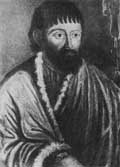

главная  персоналии
персоналии  Пугачёв Е. ??.
Пугачёв Е. ??.
главная |

Личность в историикраткая энциклопедияПроект «Личность в истории» посвящен людям — современникам грандиозных исторических событий, носителям редких качеств или людям, взгляды которых опередили их время. |
|||||||||||||||||||||||||||||||||||||||||||||||||||||||||||||||
Коротко |
Статьи |
Персоналии |
Литература |
||||||||||||||||||||||||||||||||||||||||||||||||||||||||||||
Пугачёв Е. ??. |
|||||||||||||||||||||||||||||||||||||||||||||||||||||||||||||||
|
«Повелеваем сим нашим именным указом: кои прежде были дворяне в своих поместьях и вотчинах, оных разорителей нашей власти ??з указа Пугачева от 31 июля 1774 г. |
 Е. ??. Пугачев в застенке. |
||||||||||||||||||||||||||||||||||||||||||||||||||||||||||||||
Биографическая справкаПугачёв Емельян ??ванович (ок. 1742–1775), предводитель крестьянской войны в России 1773–1775 гг. Происходил из бедной казацкой семьи. Участвовал в Семилетней войне 1756–1763 гг., а также в русско-турецкой войне 1768–1774 гг. За военные заслуги и личную храбрость получил чин хорунжего. Постоянно сталкиваясь с несправедливостью и угнетением, пришел к пониманию борьбы против существующих в России крепостнических порядков. Активно отстаивал права угнетенного народа. Неоднократно выступал челобитчиком от лица крестьян и казаков. Несколько раз заключался под стражу. Несколько раз бежал. В итоге пришел на Яик, и там, выдав себя за чудесно спасшегося императора Петра III, поднял в 1773 г. крестьянское восстание. Пугачев обещал крестьянам и казакам, всем простым людям, угнетенным и обиженным самодержавием, восстановление справедливости, вольности, землю, свободу вероисповедания и т. д. Народ, изнемогавший под бременем многочисленных поборов, страдавший от произвола помещиков, принял Пугачева как своего освободителя и стал огромными массами вливаться в его войско. Восстание стремительно разрасталось, и правительство предпринимало серьезные попытки подавить его, но Пугачев оказался талантливым полководцем, создал из вчерашних крестьян регулярную армию, снабженную артиллерией, сформировал штаб, и нанес несколько серьезных поражений правительственным войскам. Только бросив против Пугачева крупные соединения регулярных войск, правительству Екатерины II удалось подавить восстание. Впрочем, этому в немалой степени способствовало предательство группы казаков, выдавших Пугачева, чтобы заслужить прощение императрицы. Пугачев был осужден и казнен в Москве в 1775 г. Но и после его казни борьба отдельных отрядов восставших против царских войск продолжалась. Хронология
Цитаты«Вот слушай, Денис Степаныч, хоть поведаешь ты казакам, хоть не поведаешь, как хочешь, только знай, что я — государь Петр III». 4(14).11.1774 г., допрос Е. ??. Пугачева «Меня пришла гвардия и взяла под караул, а капитан Маслов и отпустил, и я… ходил в Польше, в Цареграде, во Египте, и оттоль пришол к вам на Яик». 4(14).11.1774 г., допрос Е. ??. Пугачева «На другой день пошли оне к Яику и, не дошед до города верст 5 остановились, то толпа его стала час от часу умножатца, и собралось ее как например до 200 человек». 4(14).11.1774 г., допрос Е. ??. Пугачева «Потом пришол он в Пензу, где встретили тутошние попы с крестом, а народ хлебом и солью». 4(14).11.1774 г., допрос Е. ??. Пугачева Список литературы
|
|||||||||||||||||||||||||||||||||||||||||||||||||||||||||||||||
|